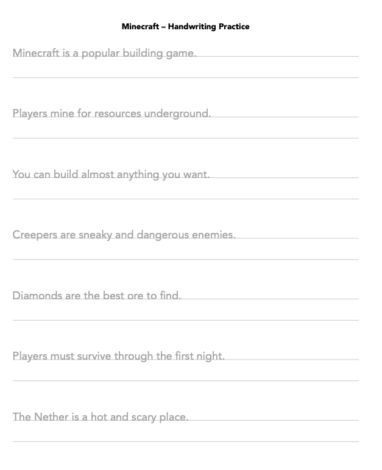
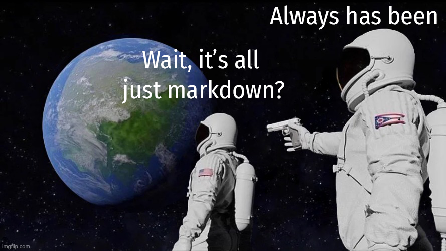
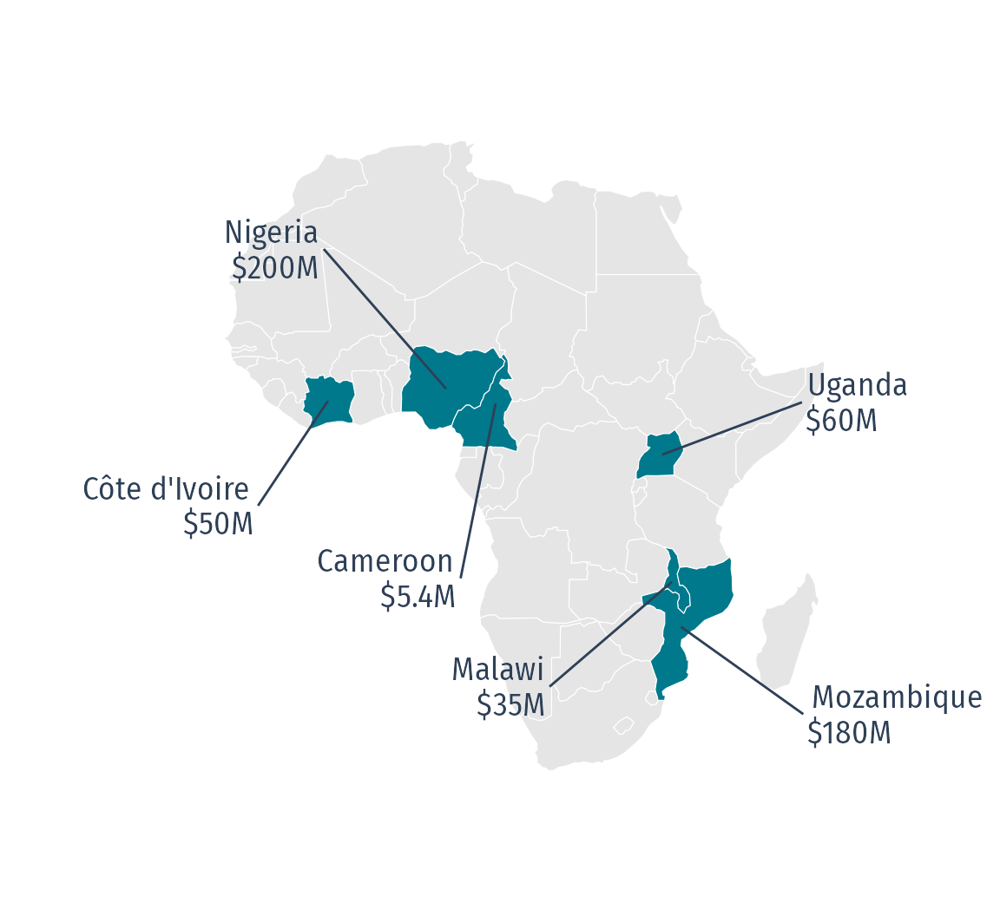

The Unreasonable Effectiveness of Quarto
John Paul Helveston
posit::conf(2026)
Houston, TX
Handwriting practice sheets

Prompt:
“Make a one-page handwriting practice sheet
with sentences about pokemon”

Eight rounds later…

I want these sentences with this layout
Content entangled with Format
Quarto disentangles Content and Format
Modularized content
handwriting-practice.qmd
(written by Claude Code)
minecraft.csv
(written by Me)
| sentence |
|---|
| Minecraft is a popular building game. |
| Players mine for resources underground. |
| You can build almost anything you want. |
| Creepers are sneaky and dangerous enemies. |
| Diamonds are the best ore to find. |
| Players must survive through the first night. |
| The Nether is a hot and scary place. |

Quarto is a canvas for modular content

Things we get for free
→ URLs to each page
→ URLs to each header
→ navigation
→ consistent layout
Each page is its own canvas
No UI
No Server
Just Code Chunks 😎
(Things to put in the canvas)
JavaScript from or packages
(Things to put in the canvas)
Widgets that talk to each other:
crosstalk + plotly
(Things to put in the canvas)
Widgets that talk to each other: ojs
// Deliberately the SAME app as the crosstalk slide -- same two panels, same
// slider, same dropdown -- so the difference between the two slides is the
// machinery, not the picture.
//
// OJS is a dataflow runtime, so these two cells can be declared before the
// inputs they depend on. `output: false` keeps their values out of the slide.
data = transpose(pen_ojs)// One plot definition used twice, so the two panels are provably the same call
// with different columns.
panel = (x, y, xlab, ylab) => Plot.plot({
width: 520,
height: 460,
marginLeft: 60,
marginBottom: 50,
// Plot's root is transparent by default, so the panels sit straight on the
// slide's ground while plotly (two slides back) paints its own white paper.
// Both knobs, because `style` alone did not take: `--plot-background` is the
// variable Plot's own stylesheet reads, and the white on .ojs-panel in
// custom.css paints the div underneath whatever the SVG ends up doing.
style: {background: "#FFFFFF", "--plot-background": "#FFFFFF"},
x: {label: xlab, labelAnchor: "center"},
y: {label: ylab, labelAnchor: "center"},
color: {domain: ["Adelie", "Chinstrap", "Gentoo"],
range: ["#00798c", "#A77400", "#d1495b"]},
marks: [
Plot.dot(filtered, {x: x, y: y, fill: "species", r: 4.5, fillOpacity: 0.8})
]
})// `width` is the form's width, not the track's; the label sits above it because
// of .ojs-stack in custom.css, so the whole 260 goes to the slider and its
// number box. Observable Inputs would otherwise park the label in a fixed
// 120px gutter on the left, which is not how crosstalk's filter_slider reads.
viewof mass = Inputs.range(
[2700, 6300],
{step: 50, value: 2700, label: "Body mass (g)", width: 260}
)// multiple: 3 makes this a list box with all three rows visible and everything
// selected at rest -- the same behaviour as crosstalk's filter_select. Plain
// `multiple: true` would open with NOTHING selected, i.e. an empty plot.
viewof sp = Inputs.select(
["Adelie", "Chinstrap", "Gentoo"],
{multiple: 3, value: ["Adelie", "Chinstrap", "Gentoo"],
label: "Species", width: 260}
)(Things to put in the canvas)
Full Shiny apps!
(Things to put in the canvas)
Put any widget in a box!
- 276 lines of hand-written MapLibre
- 1.64 GB of tiles built with
{pmtiles}(thanks Kyle Walker!) - Lives in it’s own repo
- Hosted on GitHub pages
Synthesis slide.
Potential visual:
Quarto
surrounded by:
R Python Plotly OJS Shiny MapLibre HTML etc.
It’s just static files
Everything here runs in the browser, and the whole site is files — hosted for free.
No server to run. No server to secure. No server to pay for.


ACT III — Why modularity changes AI
17. Return to the dashboard diagram
Bring back the QMD stack, but now zoom into the 15 QMDs.
“Now let’s think about this from the perspective of an AI agent.”
18. One page instead of the whole dashboard
Show depreciation.qmd.
Then your existing:
app → input + output + reactive
versus
page → chunk
And:
“This isn’t about how much you write. It’s about how much has to be true at once.”
This is one of the major intellectual peaks.
19. Small pieces have small context windows
Your file-tree slide.
Now it has an obvious purpose.
Talking point:
“The agent doesn’t have to hold Vehicle Trends in its head.” “It can reason about the thing I’m asking it to change.”
EV Sales
Sales of electric
vehicles grew 20% in 2025, reaching over 20 million sales
globally.
EV Sales
Sales of electric
vehicles grew 20% in 2025, reaching over 20 million sales
globally.
Quarto (.qmd)
126 characters
PDF (via LaTeX)
252 characters
HTML
<!DOCTYPE html>
<html lang="en">
<head>
<meta charset="utf-8">
<title>EV Sales</title>
<style>
body { font-family: Georgia, serif;
max-width: 40em; margin: 3em auto; }
h2 { font-size: 1.6em; }
</style>
</head>
<body>
<h2>EV Sales</h2>
<p>Sales of <strong>electric vehicles</strong> grew
20% in 2025, reaching over <em>20 million</em>
sales globally.</p>
</body>
</html>377 characters
EV Sales
Sales of electric
vehicles grew 20% in 2025, reaching over 20 million sales
globally.
Word (word/document.xml)
<?xml version="1.0" encoding="UTF-8" standalone="yes"?>
<w:document xmlns:w="http://schemas.openxmlformats.org/
wordprocessingml/2006/main">
<w:body>
<w:p>
<w:pPr><w:pStyle w:val="Heading2"/></w:pPr>
<w:r><w:t>EV Sales</w:t></w:r>
</w:p>
<w:p>
<w:r><w:t xml:space="preserve">Sales of </w:t></w:r>
<w:r><w:rPr><w:b/></w:rPr><w:t>electric vehicles</w:t></w:r>
<w:r><w:t xml:space="preserve"> grew 20% in 2025, reaching over </w:t></w:r>
<w:r><w:rPr><w:i/></w:rPr><w:t>20 million</w:t></w:r>
<w:r><w:t xml:space="preserve"> sales globally.</w:t></w:r>
</w:p>
</w:body>
</w:document>663 characters 😱


Small pieces have small context windows
vehicletrends.us/ lines ├── index.qmd 7 ├── about.qmd 101 ├── vmt-daily.qmd 216 ├── vmt-age.qmd 351 ├── depreciation.qmd 324 ├── percent-listings.qmd 620 ├── percent-dealers.qmd 199 ├── market-concentration.qmd 292 ├── hhi-explained.qmd 331 ├── registrations.qmd 349 ├── nearest-vehicles.qmd 34 ├── tech-stack.qmd 60 ├── cite.qmd 50 ├── LICENSE.qmd 26 └── 404.qmd 21
depreciation.qmd
## Depreciation by body style Used trucks hold their value better - than any other body style. + than any other body style, and the + gap has widened every year since 2022.
To change one thing, what has to agree?
in an app
- the input that defines it
- the output that consumes it
- the reactive that connects them
Three places, and they have to match.
in a page
- the chunk
One place, and it’s the one
I’m already looking at.
This isn’t about how much you write. It’s about how much has to be true at once —
and that is what an agent has to hold in its head.
Composition
Modularity
Correctness

There is no version that throws an error
Same map from source
library(tidyverse)
library(rnaturalearth)
library(sf)
funding <- read_csv("data/africa-funding.csv")
africa <- ne_countries(continent = "Africa", returnclass = "sf")
stopifnot(all(funding$name %in% africa$name))
funded <- africa |>
inner_join(funding, by = "name") |>
mutate(
lon = st_coordinates(st_point_on_surface(geometry))[, "X"],
lat = st_coordinates(st_point_on_surface(geometry))[, "Y"]
)
ggplot(africa) +
geom_sf(fill = "grey90", color = "white", linewidth = 0.2) +
geom_sf(data = funded, fill = "#00798c", color = "white") +
geom_segment(
data = funded, color = "#2e4057",
aes(lon, lat, xend = lon + dx, yend = lat + dy)
) +
geom_text(
data = funded, color = "#2e4057", size = 5, lineheight = 0.9,
family = "Fira Sans Condensed",
aes(
lon + dx, lat + dy, hjust = ifelse(dx > 0, -0.05, 1.05),
label = paste0(name, "\n$", amount, "M")
)
) +
coord_sf(xlim = c(-38, 66), ylim = c(-36, 38)) +
theme_void()
Quarto is checkable twice
By machine
quarto render errors loudly
Quitting from index.qmd:12-30 [africa-map] Error: ! all(funding$name %in% africa$name) is not TRUE Execution halted
quarto render errors quickly
On GitHub actions
Quarto is checkable twice
By humans
Plain text means the edit is a diff
## EV Sales Sales of **electric vehicles** grew 20% in 2025, reaching over - _20 million_ sales globally. + _`r ev_sales` million_ sales globally.
Inline R code means numbers can be computed
27. Composition + Modularity + Correctness
Your synthesis slide.
Something like:
| Composition | Quarto gives us the canvas |
| Modularity | Small pieces are tractable |
| Correctness | Source can be executed and checked |
Quarto wasn’t built for AI
That’s why it works
Bring back handwriting here?